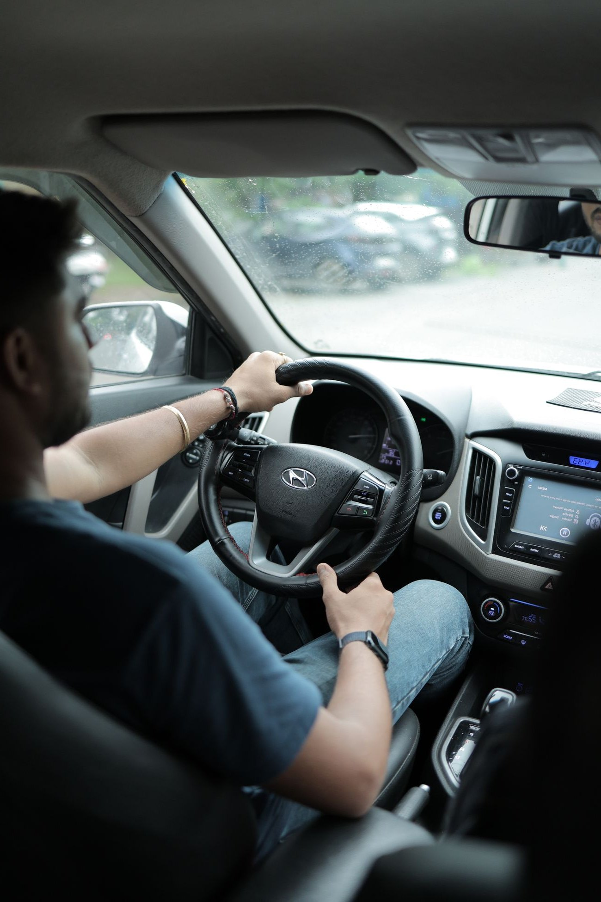

Теория
Обычно два раза в неделю, 18:00–20:00, в классе — или полный курс онлайн с компьютера или телефона.
Выберите коробку, филиал и формат теории — менеджер перезвонит и запишет в группу. Вождение индивидуально с инструктором, экзамен по вождению — на автодроме и машинах автошколы.

Фото — иллюстрация (Pexels), не ученик «Триумф-Авто»
Кнопка «Сайт» в Яндекс Картах ведёт на старый адрес, где браузер предупреждает об опасном сертификате, а новый сайт на телефоне открывается мелкой десктопной версией.
Коробка, филиал, формат теории и оплата — одной заявкой с телефона; цена курса видна сразу.
Показывает цену выбранного курса, предлагает только будущие часы по омскому времени в графике филиалов и отправляет заявку менеджеру в Telegram.
✦Это концепт. С вашими фото и правками будет ещё лучше
Цены — с текущего сайта triumf55.ru. Рядом на сайте указаны и другие суммы (37 000 и 42 000 ₽), какая цена действует сейчас — уточняется.
По сайту в курс входят теория, оформление документов в ГИБДД, индивидуальное вождение с топливом, внутренние экзамены и экзамен ГИБДД (первая сдача — бесплатно). Беспроцентная рассрочка от автошколы — первый взнос 50%; оплата картой; студентам — индивидуальная скидка.
По разделу «Вопросы» текущего сайта.
Обычно два раза в неделю, 18:00–20:00, в классе — или полный курс онлайн с компьютера или телефона.
Индивидуально с инструктором, пять смен с 9:00; график составляете вместе. У инструктора выходной — воскресенье.
Lada Granta с МКПП и АКПП. Во время учёбы можно перейти с механики на автомат.
Собственный, на 3-й Заводской, 13. Экзамен по вождению — на автодроме и машинах автошколы.
Учиться можно с 16 лет, экзамен ГИБДД — с 17, права — в день совершеннолетия.
Можно учиться и получить права в Омске с пропиской в любом регионе РФ или с разрешением на временное проживание.
Звонок — в часы работы филиалов по сайту: пн–пт 9:00–21:00, сб 9:00–15:00 (в Яндекс Картах — пн–пт 9–17, уточняется).
Почта: triumf-avto@mail.ru. Viber и WhatsApp — +7 923 671-60-60.